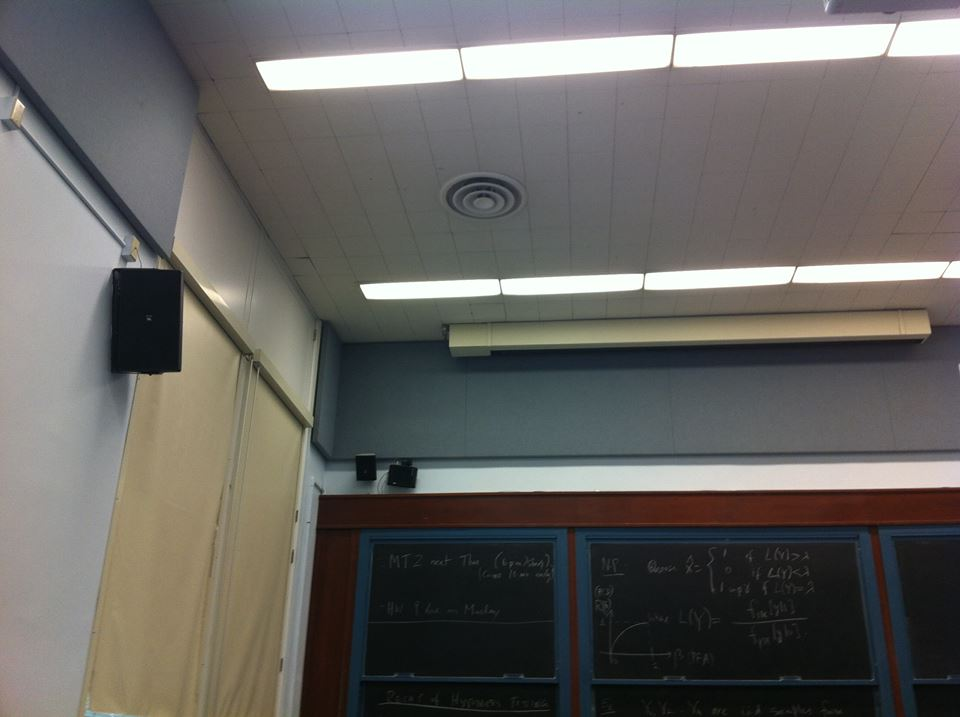
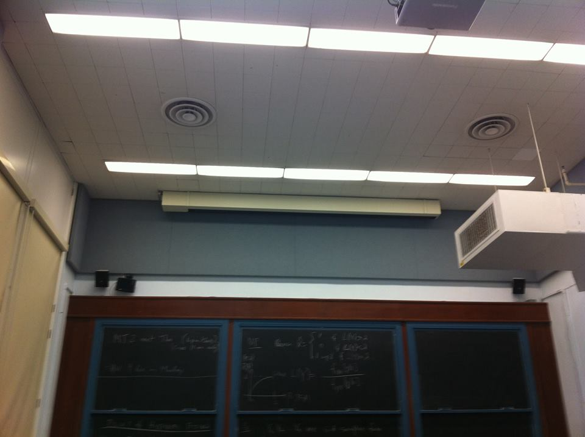
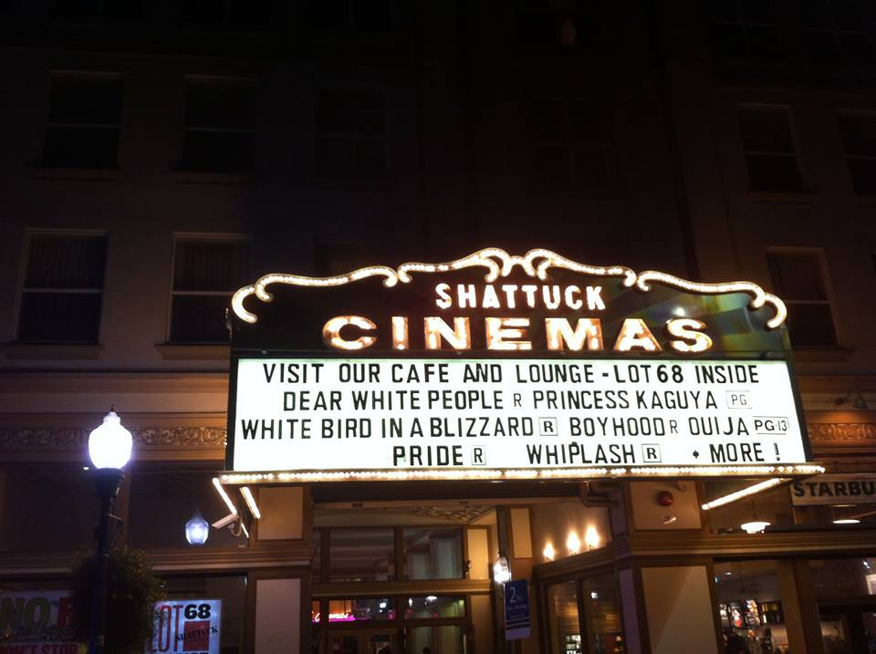
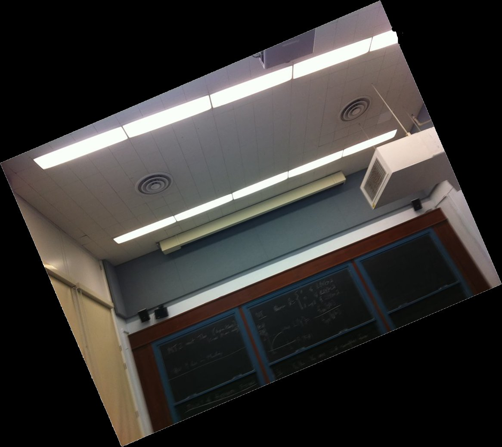
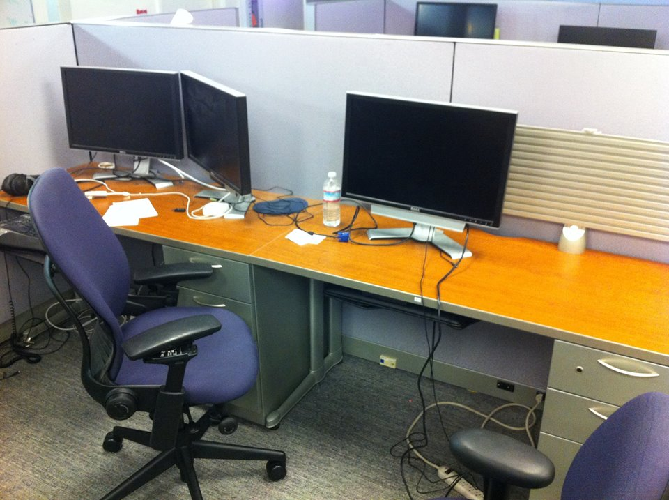

For this project, we continued upon part A (webpage) to do automatic panorama creation! Basically, this boils down to selecting matching control points rather than relying on a user to do so; everything after this remains the same. For this part, I used Gaussian and Laplacian stacks with size 3 for all my blending, since this provided me the best results from the previous part.
I performed the following steps. First, I implemented my very own Harris corner detector (no built-in library!) and applied it to each image. This was done by directly porting the provided sample code to Python. Because too many points were being generated, I removed all points whose value for the corner strength function is lower than the 95th percentile. I then used a technique called adaptive non-maximal suppression to only keep a nearly uniformly distributed subset of the chosen points for each image. For this, I followed the paper: for each Harris point, I obtained the minimum suppression radius as the distance to the closest other Harris point such that the corner strength of this point is less than 0.9 times the corner strength of the other. This means that the neighbor must have sufficiently larger corner strength. I then selected the 150 points with highest minimum suppression radius value. Afterward, I assigned each of these 150 points a feature: 64 pixels sampled evenly from the 40x40 grid around that point and normalized. Next, I matched points in each image using these features. My cutoff here was that the ratio of 1-NN / 2-NN distances from a point's features to the features of other points must be less than 0.6, a ratio which in practice worked well for me. Finally, I used 4-point RANSAC straightforwardly as described here to compute a good, robust homography matrix not affected by outliers/noise. My threshold for a set of points being in the inlier set was that the norm of the expected point minus the actual point must be less than 1 pixel. The results are quite amazing!
Here, I trace through the algorithm presented in the Background section with a specific pictoral example.
 Here are some other examples.
I learned that approximating homography matrices is actually not all that complex. RANSAC is a naive but powerful algorithm -- I was very surprised that this kind of guess-and-check method could actually be so robust and useful in practice. My favorite part was definitely extracting and matching feature descriptors for points, because it's just amazing how we can identify matching landmarks in different images.
NOTE: There are more bells and whistles on my webpage for part A, linked at the top of this page.
1. Rotational Invariance
I successfully implemented rotational invariance as follows. First, for each Harris point, we compute the associated orientation vector as the vector of [smoothed x derivative, smoothed y derivative] at that coordinate. The smoothed derivative is obtained by simply sending each derivative through a Gaussian filter with parameter 4.5, as suggested in the paper. Call this orientation vector u. Second, to rotate the feature descriptor grid, we begin by observing that each point in the grid could originally be computed as grid_pt = img_center + 5 * i * [0, 1] + 5 * j * [1, 0], where i ranges from -3 to 4 and j ranges from -3 to 4. So, for the rotated case, we perform a change of basis and obtain grid_pt = img_center + 5 * i * u + 5 * j * u_perp, where u_perp equals u rotated by 90 degrees in either direction. Here are my results showcasing correctness.
2. Panorama Recognition
I implemented panorama recognition from an unordered set. In order to do this, I followed and implemented the algorithm described in this paper. The core idea is that after my RANSAC homography matrix calculation, I determine the total number of features (n_f), as well as the number of features in the inlier set for the finally chosen matrix (n_i). I then use the formula derived in the paper, n_i > 5.9 + 0.22 * n_f, as my threshold for keeping a particular image within the mosaic. Here are some results. Note that if no images in the entire set are determined to create a panorama, I default to returning the first image.
Case 1
Case 2
Case 3
